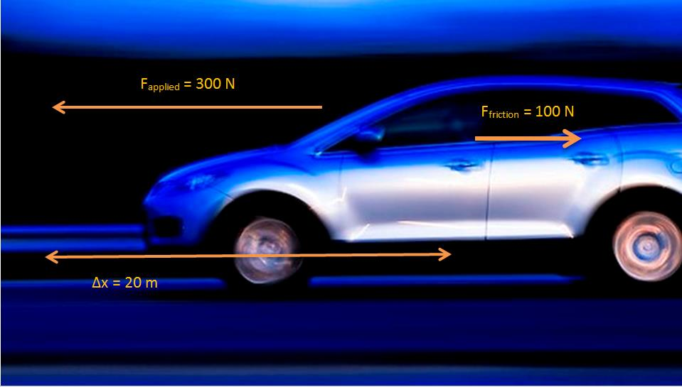
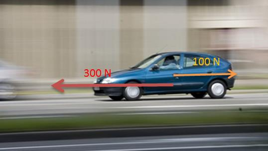

We use the idea of work every day. We talk about going to work, doing homework, working in class. What do we mean and are we correct?
In Physics we mean something very specific when we use the term work. Work is the process
of transferring energy.
You will learn that work and energy are closely related. You shall see that the
energy of an object is its capacity to do work and doing work is the process of transferring
energy from one object or form to another. In other
words,
an object with lots of energy can do lots of work.
when work is done, energy is lost by the object doing work and gained by the object on which the work is done.
Lifting objects or throwing them requires that you do work on them. Even making an electrical current flow requires that something do work. Something must have energy and transfer it through doing work to make things happen.
In the specific case of a force acting on an object, worked can be defined in terms of the
force and the displacement of the object. This means that there is an energy transfer from the
source of the force to the object. The total energy transferred is the work done.
Work
When a force exerted on an object causes it to move, work is done on the object.
This means that in order for work to be done, an object must have its position changed by
an amount
an applied force F, such that there is some non-zero
component of the force in the direction of the displacement. Work is calculated as:
Where:
= work in joules (J)
= magnitude of applied force in newtons (N)
= displacement in metres (m)
= angle between the applied force and the direction of motion
The force
causes the object to be displaced by
at angle θ.
Important: the sign of
is
important. If the component of the force along the direction of the displacement is opposite
in direction to the displacement then the sign of the displacement vector and force vector
will be different. This is regardless of which direction was chosen as a positive direction.
Work isn't a vector quantity but if the force and dispalcement vectors are in opposite directions
the work done has a negative value.
Let us look at some examples to understand this properly. In the images below the grey dot
represents an object. A force,
,acts on the object. The object moves
through a displacement,
.What is the sign of the work done,
,in each case?
At
the magnitude of the component of the
force in the direction of the displacement is zero so
no work is done
.
At
the magnitude of the component of the
force along the line of the displacement is opposite in direction to the
displacement so
negative work is done
.
It is very important to note that for work to be done there must be a component of the applied force in the direction of motion. Forces perpendicular to the direction of motion do no work.
The force F causes the object to be displaced by
at angle θ.
It is only the direction of the force on the object that matters and not the direction
from the source of the force to the object. In Figure fig:wpe12:powerlifters both
powerlifters are exerting an upwards force on the weights. On the left the weight is being
pulled upwards and on the right it is being pushed upwards.
Left: A powerlifter deadlifts a weight. Right: A powerlifter benchpresses a weight.
Weight lifting is a good context to think about work because it helps to identify
misconceptions introduced by everyday use of the word work.
In the two cases in Figure fig:wpe12:powerlifters everyone would
describe moving the weights upwards as very hard work. From a physics perspective, if the
powerlifters lift the weight they are exerting a force in the direction of the
displacement so positive work is done.
Consider the strongman walking in Figure fig:wep:carry.
He carries two very heavy sleds as far as he can in a competition.
What work is the man doing on the sleds and why?
Astrongman carries heavy sleds as far as possible in a competition.
Most people would say he is working very
hard because they are heavy to carry but from a physics perspective he is doing
no work. The reason that he does no work is because the force he exerts is directly
upwards to balance the force of gravity and the displacement is in the horizontal
direction. Therefore there is no component of the force in the direction of displacement
(
)and no work done.
His muscles do need to use their energy reserves to maintain the force to
balance gravity. That does not result in energy tranfser to the
sleds. Our definition for work is restricted to the case where energy transfer
happens because of a net force in the direction of displacement of an object.
Is work done?
Decide whether on not work is done in the following situations. Remember that for work to be done a force must be applied in the direction of motion and there must be a displacement. Give reasons for your answer.
Max pushes against a wall and becomes tired.
A book falls off a table and free falls to the ground.
A rocket accelerates through space.
A waiter holds a tray full of meals above his head with one arm and carries it straight across the room at constant speed. (Careful! This is a tricky question.)
Max pushes against a wall and becomes tired. Answer: No work is done because there
is no displacement.
A book falls off a table and free falls to the ground. Answer: Yes work is done
because there is a displacement in the direction of the force of gravity.
A rocket accelerates through space. Answer: Yes work is done because there is a
net force acting for there to be a net acceleration. If there is an acceleration then
there is a displacement.
A waiter holds a tray full of meals above his head with one arm and carries it straight across the room at constant speed. (Careful! This is a tricky question.) Answer: No work is done because
there is no net force in the direction of the displacement.
For each of the above pictures, the force vector is acting in the same direction as the displacement vector. As a result, the
because there is no difference in angle between the direction of applied force and the direction of displacement.
As with all physical quantities, work must have units. Following from the definition, work is measured in
.The name given to this combination of S.I. units is the joule (symbol J).
The work done by a force can then be positive or negative. This sign tells us about the
direction of the energy transfer. Work is a scalar so the sign should not be misinterpreted to
mean that work is a vector.
If
acts in the same direction as the motion then positive work is being done. In this case the object on which the force is applied gains energy.
If the direction of motion and
are opposite, then
negative work is being done. This means that energy is transferred in the opposite
direction. For example, if you try to push a car uphill by applying a force up the
slope and instead the car rolls down the hill you are doing negative work on the car.
Alternatively, the car is doing positive work on you!
The everyday use of the word "work" differs from the physics use. In physics, only the component of the applied force that is parallel to the motion does work on an object. So, for example, a person holding up a heavy book does no work on the book.
Calculating work on a car when speeding up.
The car is speeding up and a force of
~
is applied forward on the car while it is travelling
~
forward. Calculate the work done on the car.
Analyse the question to determine what information is provided
The force applied is F=
~
.
The distance moved is
=
~
.
The applied force and distance moved are in the same
direction. Therefore,
.
These quantities are all in the correct units, so no unit conversions
are required.
Analyse the question to determine what is being asked
We are asked to find the work done on the car. We know from the
definition that work done is
Next we substitute the values and calculate the work done
Remember that the answer must be positive as the applied force and the motion are in the same direction (forwards). In this case, the car gains kinetic energy.
Calculating work on the car while braking
The car is slowing down and a force of
~
is applied backward on the car while it is travelling
~
forward. Calculate the work done on the car.
Analyse the question to determine what information is provided
The force applied is F=
~
.
The distance moved is
=
~
.
The applied force and distance moved are in the opposite direction. Therefore,
.
These quantities are all in the correct units, so no unit conversions are required.
Analyse the question to determine what is being asked
We are asked to find the work done on the car. We know from the definition that work done is
Next we substitute the values and calculate the work done
Note that the answer must be negative as the applied force and the motion are in opposite directions. This means that the energy is being lost by the car. This may be energy lost as heat to the environment.
What happens when the applied force and the motion are not parallel? By using the formula
, we are actually calculating the component of the applied force in the direction of motion. Note that this means a force perpendicular to the direction of motion can do no work.
Calculating work done on a box pulled at an angle.
Calculate the work done on a box, if it is pulled
~
along the ground by applying a force of F=
~
at an angle of
to the horizontal.
Analyse the question to determine what information is provided
The force applied is F=
~
The distance moved is
=
~
along the ground
The angle between the applied force and the motion is
These quantities are in the correct units so we do not need to perform
any unit conversions.
Analyse the question to determine what is being asked
We are asked to find the work done on the box.
Substitute and calculate the work done
Now we can calculate the work done on the box:
Note that the answer is positive as the component of the force
is in the same direction as the motion.
Work
A
~
force is applied to push a block across a friction free surface for a displacement of
~
to the right. The block has a weight
of
~
.Determine the work done by the following forces: normal force, weight
,applied force.
A
~
frictional force slows a moving block to a stop after a displacement of
~
to the right. The block has a weight of
~
Determine the work done by the following forces: normal force, weight, frictional force.
A
~
force is applied to push a block across a frictional surface at constant speed for a displacement of
~
to the right. The block has a weight of
~
and the frictional force is
~
.Determine the work done by the following forces: normal force, weight, frictional force.
Before beginning its descent, a roller coaster is always pulled up the first hill to a high initial height. Work is done on the roller coaster to achieve this initial height. A coaster designer is considering three different incline angles of the hill at which to drag the
~
car train to the top of the
~
high hill. In each case, the force applied to the car will be applied parallel to the hill. Her critical question is: which angle would require the least work? Analyse the data, determine the work done in each case, and answer this critical question.
Angle of Incline
Applied Force
Distance
Work
~
~
~
~
~
~
Angle of Incline
Applied Force
Distance
Work
~
~
~
~
~
~
~
~
~
An angle of 55° requires the least amount of work to be done.
Big Bertha carries a
~
suitcase up four flights of stairs (a total height of
~
)and then pushes it with a horizontal force of
~
at a constant speed of
~
for a horizontal distance of
~
on a frictionless surface. How much work does Big Bertha do on the suitcase during this entire trip?
A mother pushes down on a pram with a force of
~
at an angle of
.The pram is moving on a frictionless surface. If the mother pushes the pram for a horizontal distance of
~
,how much does she do on the pram?
How much work is done by an applied force to raise a
~
lift 5 floors vertically at a constant speed? Each floor is
~
high.
A student with a mass of
~
runs up three flights of stairs in
~
,covering a vertical distance of
~
.Determine the amount of work done by the student to elevate her body to this height. Assume that her speed is constant.
Net work
The total work done on an object can be calculated by adding the work done by each individual force that is applied in the plane of motion. Take note that some values may be negative if energy is removed from the object.
Calculating the net work on a car.
The same car is now accelerating forward, but friction is working against the motion of the car. A force of
~
is applied forward on the car while it is travelling
~
forward. A frictional force of
~
acts to oppose the motion. Calculate the net work done on the car.

Only forces with a component in the plane of motion are shown on the diagram. No work is done by
or
Analyse the question to determine what information is provided
The force applied is F=
~
forwards.
The force of friction is F=
~
backwards.
The distance moved is
=
~
.
The applied force and distance moved are in the same plane so we can calculate the work done by the applied forward force and the work done by the force of friction backwards.
These quantities are all in the correct units, so no unit conversions are required.
Analyse the question to determine what is being asked
We are asked to find the net work done on the car. We know from the definition that work done is
Next we calculate the work done by each force.
The answer shown in this worked example shows that although energy has been lost by the car to friction, the total work done on the car has resulted in a net energy gain. This can be seen by the positive answer.
There is an alternative method to solve the same problem, which is to determine the net force acting on the car and to use this to calculate the work. This means that the vector forces acting in the plane of motion must be added to get the net force
.The net force is then applied over the displacement to get the net work
.
Calculating the net work on a car using the alternative method.
The same car is now accelerating forward, but friction is working against the motion of the car. A force of
~
is applied forward on the car while it is travelling
~
forward. A frictional force of
~
acts to oppose the motion. Calculate the net work done on the car.

Only forces with a component in the plane of motion are shown on the diagram. No work is done by
or
as they act perpendicular to the direction of motion. The net force acting in the plane of motion will be calculated using the non-perpendicular forces.
Analyse the question to determine what information is provided
The force applied is F=
~
forwards.
The force of friction is F=
~
backwards.
The distance moved is
=
~
.
The applied forces
and the force of friction
are in the same plane as distance moved. Therefore, we can add the vectors. As vectors require direction, we will say that forward is positive and therefore backward is negative. Note, the force of friction is acting at
i.e. backwards and so is acting in the opposite vector direction i.e. negative.
These quantities are all in the correct units, so no unit conversions are required.
Analyse the question to determine what is being asked
We are asked to find the net work done on the car. We know from the definition that work done is
We calculate the net force acting on the car, and we convert this into net work.
Let forwards be positive.
Energy
External and internal forces
In Grade 10, you saw that mechanical energy was conserved in the absence of external forces. It is important to know whether a force is an internal force or an external force in the system, because this is related to whether the force can change an object's total mechanical energy when it does work on an object.
When an external force (for example friction, air resistance, applied force) does work on an object, the total mechanical energy (KE + PE) of that object changes. If positive work is done, then the object will gain energy. If negative work is done, then the object will lose energy. The gain or loss in energy can be in the form of potential energy, kinetic energy, or both. However, the work which is done is equal to the change in mechanical energy of the object.
External forces
We can investigate the effect of external forces on an object's total mechanical energy by rolling a ball along the floor from point A to point B.
<code>
(0,-0.7)(7.78,0.7)
\psline[linewidth=0.04cm](0.0,-0.24)(7.76,-0.22)
\pscircle[linewidth=0.04,dimen=outer](2.3,0.12){0.36}
\psline[linewidth=0.04cm,arrowsize=0.05291667cm 2.0,arrowlength=1.4,arrowinset=0.4]{->}(2.76,0.2)(3.76,0.2)
\usefont{T1}{ptm}{m}{n}
\rput(4.85,0.525){\small direction of motion of the ball}
\psdots[dotsize=0.12](0.58,-0.24)
\psdots[dotsize=0.13](6.58,-0.22)
\usefont{T1}{ptm}{m}{n}
\rput(0.59,-0.555){A}
\usefont{T1}{ptm}{m}{n}
\rput(6.59,-0.535){B}
</code>
Find a nice smooth surface (e.g. a highly polished floor), mark off two positions, A and B, and roll the ball between them.
The total mechanical energy of the ball, at each point, is the sum of its kinetic energy (KE) and gravitational potential energy (PE):
In the absence of friction and other external forces, the ball should slide along the floor and its speed should be the same at positions A and B. Since there are no external forces acting on the ball, its total mechanical energy at points A and B are equal.
Now, let's investigate what happens when there is friction (an external force) acting on the ball.
Roll the ball along a rough surface or a carpeted floor. What happens to the speed of the ball at point A compared to point B?
If the surface you are rolling the ball along is very rough and provides a large external frictional force, then the ball should be moving much slower at point B than at point A.
Let's compare the total mechanical energy of the ball at points A and B:
However, in this case,
and therefore
.Since
Therefore, the ball has lost mechanical energy as it moves across the carpet.
However, although the ball has lost mechanical energy, energy in the larger system has still been conserved. In this case, the missing
energy is the work done by the carpet through applying a frictional force on the ball. In this case the carpet is doing negative work on the ball.
When an internal force does work on an object by an (for example, gravitational and spring forces), the total mechanical energy (KE + PE) of that object remains constant but the object's energy can change form. For example, as an object falls in a gravitational field from a high elevation to a lower elevation, some of the object's potential energy is changed into kinetic energy. However, the sum of the kinetic and potential energies remain constant. When the only forces doing work are internal forces, energy changes forms - from kinetic to potential (or vice versa); yet the total amount of mechanical energy is conserved.
Capacity to do work
Energy is the capacity to do work. When positive work is done on an object, the system doing the work loses energy. In fact, the energy lost by a system is exactly equal to the work done by the system. An object with larger potential energy has a greater capacity to do work.
Work done on a system
Show that a hammer of mass
~
does more work when dropped from a height of
~
than when dropped from a height of
~
.Confirm that the hammer has a greater potential energy at
~
than at
~
.
Determine what is given and what is required
We are given:
the mass of the hammer,
height 1,
height 2,
We are required to show that the hammer does more work when dropped from
than from
.We are also required to confirm that the hammer has a greater potential energy at
~
than at
~
.
Determine how to approach the problem
Calculate the work done by the hammer,
,when dropped from
using:
Calculate the work done by the hammer,
,when dropped from
using:
Compare
and
Calculate potential energy at
and
and compare using:
This means that the potential energy is equal to the work done. Therefore,
,because
.
This leads us to the work-energy theorem.
Work-energy theorem
The work-energy theorem states that the work done on an object is equal to the change in its kinetic energy:
The work-energy theorem is another example of the conservation of energy which you saw in Grade 10.
Work-energy theorem
A
~
brick is dropped from a height of
~
.Calculate the work done on the brick when it hits the ground assuming that there is no air resistance.
Determine what is given and what is required
Mass of the brick:
.
Initial height of the brick:
.
Final height of the brick:
.
We are required to determine the work done on the brick as it hits the ground.
Determine how to approach the problem
The brick is falling freely, so energy is conserved. We know that the work done is equal to the difference in kinetic energy. The brick has no kinetic energy at the moment it is dropped, because it is stationary. When the brick hits the ground, all the brick's potential energy is converted to kinetic energy.
Determine the brick's potential energy at
Determine the work done on the brick
The brick had
~
of potential energy when it was released and
~
of kinetic energy. When the brick hit the ground, it had
~
of potential energy and
~
of kinetic energy. Therefore
and
.
From the work-energy theorem:
Hence,
~
of work was done on the brick.
Work-energy theorem 2
The driver of a
~
car travelling at a speed of
~
applies the car's brakes when he sees a red robot. The car's brakes provide a frictional force of
~
.Determine the stopping distance of the car.
Determine what is given and what is required
We are given:
mass of the car: m =
~
speed of the car: v =
~
frictional force of brakes: F =
~
We are required to determine the stopping distance of the car.
Determine how to approach the problem
We apply the work-energy theorem. We know that all the car's kinetic energy is lost to friction. Therefore, the change in the car's kinetic energy is equal to the work done by the frictional force of the car's brakes.
Therefore, we first need to determine the car's kinetic energy at the moment of braking using:
This energy is equal to the work done by the brakes. We have the force applied by the brakes, and we can use:
to determine the stopping distance.
Determine the kinetic energy of the car
Determine the work done
Assume the stopping distance is
.Then the work done is:
The force has a negative sign because it acts in a direction opposite to the direction of motion.
Apply the work-enemy theorem
The change in kinetic energy is equal to the work done.
Write the final answer
The car stops in
~
.
A force only does work on an object for the time that it is in contact with the object. For example, a person pushing a trolley does work on the trolley, but the road does no work on the tyres of a car if they turn without slipping (the force is not applied over any distance because a different piece of tyre touches the road every instant).
In the example of a falling mass the potential energy is known as gravitational potential energy as it is the gravitational force exerted by the earth which causes the mass to accelerate towards the ground. The gravitational field of the earth is what does the work in this case.
Another example is a rubber-band. In order to stretch a rubber-band we have
to do work on it. This means we transfer energy to the rubber-band and
it gains potential energy. This potential energy is called elastic potential energy. Once released, the rubber-band begins to
move and elastic potential energy is transferred into kinetic energy.
Other forms of potential energy
elastic potential energy - potential energy is stored in a compressed or extended spring or rubber band. This potential energy is calculated by:
where k is a constant that is a measure of the stiffness of the spring or rubber band and x is the extension of the spring or rubber band.
Chemical potential energy is related to the making and breaking of chemical bonds. For example, a battery converts chemical energy into electrical energy.
The electrical potential energy of an electrically charged object is defined as the work that must be done to move it from an infinite distance away to its present location, in the absence of any non-electrical forces on the object. This energy is non-zero if there is another electrically charged object nearby otherwise it is given by:
where k is Coulomb's constant. For example, an electric motor lifting an elevator converts electrical energy into gravitational potential energy.
Nuclear energy is the energy released when the nucleus of an atom is split or fused. A nuclear reactor converts nuclear energy into heat.
Some of these forms of energy will be studied in later chapters.
Energy resources
Energy can be taken from almost anywhere. Power plants use many different types of energy sources, including oil, coal, nuclear, biomass (organic gases), wind, solar, geothermal (the heat from the earth's rocks is very hot underground and is used to turn water to steam), tidal and hydroelectric (waterfalls). Most power stations work by using steam to turn turbines which then drive generators and create an electric current.
Most of these sources are dependant upon the sun's energy, because
without it we would not have weather for wind and tides. The sun
is also responsible for growing plants which decompose into fossil
fuels like oil and coal. All these sources can be put under 2
headings, renewable and non-renewable. Renewable sources are
sources which will not run out, like solar energy and wind power.
Non-renewable sources are ones which will run out eventually, like
oil and coal.
It is important that we learn to appreciate conservation in
situations like this. The planet has a number of linked systems
and if we don't appreciate the long-term consequences of our
actions we run the risk of doing damage now that we will only
suffer from in many years time.
Investigate two types of renewable and two types of non-renewable energy resources, listing advantages and disadvantages of each type. Write up the results as a short report.
Energy
Fill in the table with the missing information using the positions of the ball in the diagram below combined with the work-energy theorem.
A falling ball hits the ground at
~
in a vacuum. Would the speed of the ball be increased or decreased if air resistance were taken into account. Discuss using the work-energy theorem.
A pendulum with mass
~
is attached to the ceiling. It is pulled up to point A which is a height h =
~
from the equilibrium position.
Calculate the speed of the pendulum when it reaches point B (the equilibrium point). Assume that there are no external forces acting on the pendulum.
Power
Now that we understand the relationship between work and energy, we are ready to look at a quantity that defines how long it takes for a certain amount of work to be done. For example, a mother pushing a trolley full of groceries can take
~
or
~
to push the trolley down an aisle. She does the same amount of work, but takes a different length of time. We use the idea of power to describe the rate at which work is done.
The unit watt is named after Scottish inventor and engineer James Watt (19 January 1736 - 19 August 1819) whose improvements to the steam engine were fundamental to the Industrial Revolution. A key feature of it was that it brought the engine out of the remote coal fields into factories.
Power
Power is defined as the rate at which work is done or the rate at which energy is expended. The mathematical definition for power is:
uid129 is easily derived from the definition of work. We know that:
However, power is defined as the rate at which work is done. Therefore,
This can be written as:
The unit of power is watt (symbol W).
Watt
Show that the W is equivalent to
.
James Watt
Write a short report 5 pages on the life of James Watt describing his many other inventions.
Historically, the horsepower (symbol hp) was the unit used to describe the power delivered by a machine. One horsepower is equivalent to approximately
~
.The horsepower was derived by James Watt to give an indication of the power of his steam engine in terms of the power of a horse, which was what most people used to for example, turn a mill wheel.
Power calculation 1
Calculate the power required for a force of
~
applied to move a
~
box at a speed of
~
over a frictionless surface.
From the force diagram, we see that the weight of the box is acting at right angles to the direction of motion. The weight does not contribute to the work done and does not contribute to the power calculation.
We can therefore calculate power from:
.
Calculate the power required
Write the final answer
~
of power are required for a force of
~
to move a
~
box at a speed of
~
over a frictionless surface.
Machines are designed and built to do work on objects. All machines usually have a power rating. The power rating indicates the rate at which that machine can do work upon other objects.
A car engine is an example of a machine which is given a power rating. The power rating relates to how rapidly the car can accelerate. Suppose that a 50 kW engine could accelerate the car from
~
to
~
in
~
.Then a car with four times the power rating (i.e.
~
)could do the same amount of work in a quarter of the time. That is, a
~
engine could accelerate the same car from
~
to
~
in
~
.
Power calculation 2
A forklift lifts a crate of mass
~
at a constant velocity to a height of
~
over a time of
~
.The forklift then holds the crate in place for
~
.Calculate how much power the forklift exerts in lifting the crate? How much power does the forklift exert in holding the crate in place?
Determine what is given and what is required
We are given:
mass of crate: m=
~
height that crate is raised: h=
~
time taken to raise crate:
time that crate is held in place:
We are required to calculate the power exerted.
Determine how to approach the problem
We can use:
to calculate power. The force required to raise the crate is equal to the weight of the crate.
Calculate the power required to raise the crate
Calculate the power required to hold the crate in place
While the crate is being held in place, there is no displacement. This means there is no work done on the crate and therefore there is no power exerted.
Write the final answer
~
of power is exerted to raise the crate and no power is exerted to hold the crate in place.
Simple measurements of human power
You can perform various physical activities, for example lifting measured weights or climbing a flight of stairs to estimate your output power, using a stop watch. Note: the human body is not very efficient in these activities, so your actual power will be much greater than estimated here.
Power
[IEB 2005/11 HG] Which of the following is equivalent to the SI unit of power:
Two students, Bill and Bob, are in the weight lifting room of their local gym. Bill lifts the
~
barbell over his head 10 times in one minute while Bob lifts the
~
barbell over his head 10 times in
~
.Who does the most work? Who delivers the most power? Explain your answers.
Jack and Jill ran up the hill. Jack is twice as massive as Jill; yet Jill ascended the same distance in half the time. Who did the most work? Who delivered the most power? Explain your answers.
Alex (mass
~
)is training for the Comrades Marathon. Part of Alex's training schedule involves push-ups. Alex does his push-ups by applying a force to elevate his centre-of-mass by
~
.Determine the number of push-ups that Alex must do in order to do
~
of work. If Alex does all this work in
~
,then determine Alex's power.
When doing a chin-up, a physics student lifts her
~
body a distance of
~
in
~
.What is the power delivered by the student's biceps?
The unit of power that is used on a monthly electricity account is kilowatt-hours (symbol
). This is a unit of energy delivered by the flow of
~
of electricity for
~
.Show how many joules of energy you get when you buy
~
of electricity.
An escalator is used to move 20 passengers every minute from the first floor of a shopping mall to the second. The second floor is located 5-meters above the first floor. The average passenger's mass is
~
.Determine the power requirement of the escalator in order to move this number of passengers in this amount of time.
Calculate the power required for an electric motor to pump
~
of water up to ground level from a borehole of depth
~
in half a minute.
Conservation of Energy:
Energy is never created nor destroyed, but is only transformed from
one form to another.
Conservation of Mechanical Energy:
In the absence of friction, the total mechanical energy of an object
is conserved.
When a force moves in the direction along which it acts, work is done.
Work is the process of converting energy.
Energy is the ability to do work.
The force vs. displacement graph shows the amount of force applied to an object by three different people. Abdul applies force to the object for the first
~
of its displacement, Beth applies force from the
~
point to the
~
point, and Charles applies force from the
~
point to the
~
point. Calculate the work done by each person on the object? Which of the three does the most work on the object?
How much work does a person do in pushing a shopping trolley with a force of
~
over a distance of
~
in the direction of the force?
How much work does the force of gravity do in pulling a
~
box down a
frictionless inclined plane of length
~
?
[IEB 2001/11 HG1] Of which one of the following quantities is
the base S.I. unit?
a
Energy
c
Power
b
Force
d
Momentum
[IEB 2003/11 HG1] A motor is used to raise a mass m through a vertical height h in time t.
What is the power of the motor while doing this?
a
c
b
d
[IEB 2002/11 HG1] An electric motor lifts a load of mass M vertically through a height h at a constant speed v. Which of the following expressions can be used to calculate the power transferred by the motor to the load while it is lifted at constant speed?
a
c
b
Mv
d
[IEB 2001/11 HG1] An escalator is a moving staircase that is powered by an electric motor. People are lifted up the escalator at a constant speed of v through a vertical height h.
What is the energy gained by a person of mass m standing on the escalator when he is lifted from the bottom to the top?